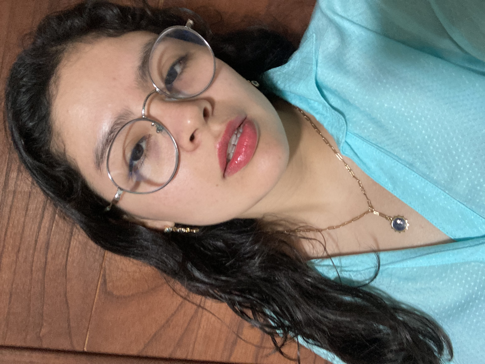
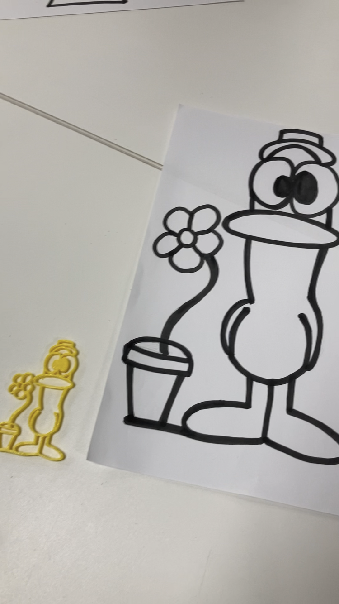
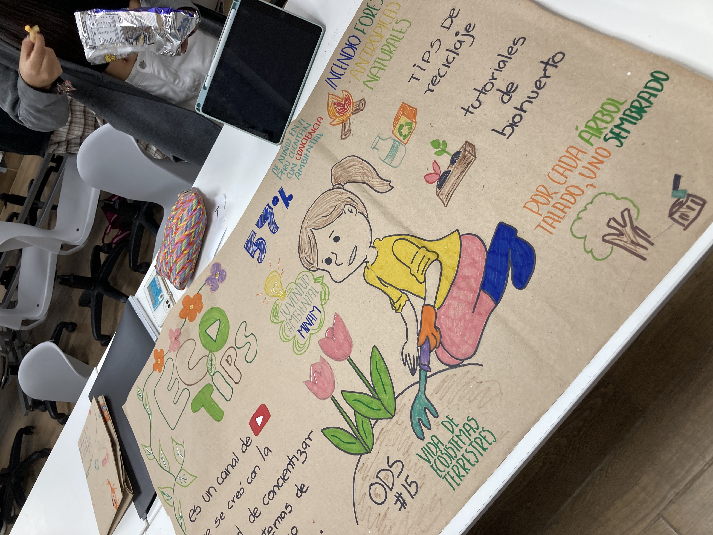
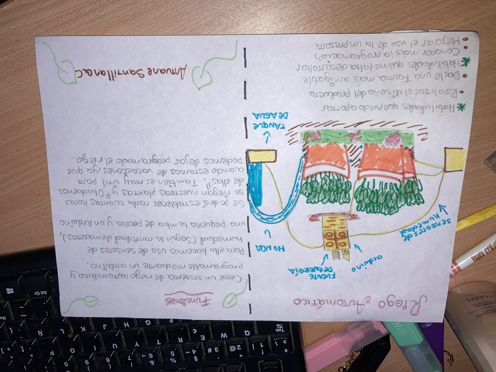

|  | SOBRE MI 🦋 Hola soy Antuane Santillana Carrillo pero me pueden llamar Antu con confianza jeje, estudio la carrera de CAM y actualmente me encuentro cursando el 8vo ciclo. Soy de las personas que les gusta hacer actividades diferentes y aprender cosas nuevas, entre mis gustos están la fotografía, el teatro, ver tendencias, combinar ropa y más. Mi sueño anhelado es poder emprender mi propia agencia donde realice servicios Audiovisuales y sobretodo poner a prueba mi creatividad, innovación y constancia. Disfruten de su estadía aquí, un gusto conocerlos✨. |
|  | MISIÓN 1 ⚡ En la primera sesión presencial nos dividieron en equipos para poder conocernos y desarrollar lo que sería nuestra primera mision, dibujar. En nuestro caso dibujos lo que más teniamos en común junto con mi equipo y eso se resumía en el gran PATO, el icónico personaje de Pocoyo el cual a todos nos fascinaba, nos divertimos recreandolo en 2D sin saber que la finalidad de la actividad sería imprimirlo, la verdad me encanto el resultado final. |
|  | MISIÓN 2 ⚡ La siguiente semana trabajamos un panel, aquí nos pusimos locos, con colores, dibujos y harta creatividad, dicho panel consistia en colocar una problemática y trabajarla de forma innovadora para luego exponerlo frente a nuestros compañeros, aquí reforzamos el trabajo en equipo, la comunicación y nuestra mente. Al final de la sesión expusimos y aunque no fuimos el equipo ganador fue muy divertido realizarlo, ¡Misión cumplida! ✔️ |
|  | MISIÓN 3 ⚡ Finalmente para la última semana de clase trabajamos acerca de una solución innovadora que nosotros mismos podamos crear, para ello en lápiz y papel especificamos como es el mecanismo de nuestro proyecto elegido, en mi caso elegí un Riego Automático como solución, investigue un poco para manejar la información y poder plantearla correctamente, estuvo muy entretenida la actividad. |